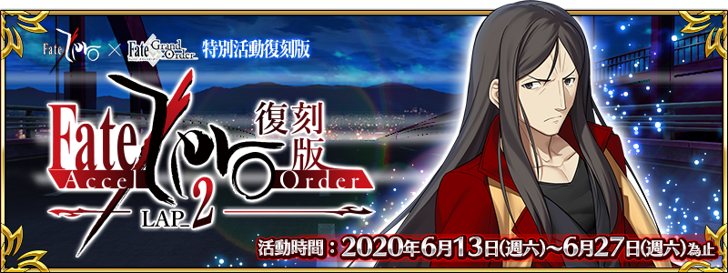

本頁面資訊僅供參考，實際情況請以遊戲內資料為準。
由於直接使用官方翻譯，可能會與其他站內翻譯相異，敬請見諒。
其他公告內容請參照日版當時公告翻譯。
- 活動限定效果
-
活動限定效果 
槍之印章獲得提升 


槍之印章的掉落數增加3個劍之印章獲得提升 

劍之印章的掉落數增加3個弓之印章獲得提升 
弓之印章的掉落數增加3個術之印章獲得提升 

術之印章的掉落數增加3個殺之印章獲得提升 


殺之印章的掉落數增加3個騎之印章獲得提升 


騎之印章的掉落數增加3個狂之印章獲得提升 
狂之印章的掉落數增加3個

裝備從者的對立職階印章的掉落獲得數增加3個(最大解放:4個) 
裝備從者的對立職階印章的掉落獲得數增加2個(最大解放:3個) 
裝備從者的對立職階印章的掉落獲得數增加1個(最大解放:2個) 
全部印章的掉落數增加2個(最大解放:3個) 在裝備PICK UP概念禮裝時提升掉落獲得數的印章 


全職階的印章
採用GoogleDrive資料夾呈現
| 任務 | 獎勵 | 解鎖條件 |
|---|---|---|
| No.1 探索『住宅街』 | 6/13 13:00後 | |
| No.2 攻略關卡『BRIDGE BATTLE Rank D』 【完成任務後開放關卡『ACT-2 武力介入』】 | 達成：No.18 | |
| No.3 攻略關卡『ACT-2 武力介入』 | 達成：No.2 | |
| No.4 攻略關卡『魔物盤踞之港 Rank C』 | 2m | 達成：No.3 |
| No.5 攻略關卡『ACT-7 狩獵藍鬍子』 | 達成：No.33 | |
| No.6 攻略關卡『ACT-8 Irregular』 | 達成：No.55 | |
| No.7 攻略關卡『ACT-10 謎之暗殺者』 | 達成：No.29 | |
| No.8 攻略關卡『ACT-13 亂戰』 | 達成：No.39 | |
| No.9 攻略關卡『ACT-14 狙擊愛麗絲菲爾之影』 | 達成：No.20 | |
| No.10 攻略關卡『ACT-15 目標為大聖盃』 | 達成：No.97 | |
| No.11 攻略關卡『ACT-18 墮落之杯』 | 達成：No.40 | |
| No.12 完成任務『No.11』 【完成任務後開放關卡『ACT-EX 「輪轉聖盃回收」』】 | ※「6/20 16:00」以後 | |
| No.13 攻略關卡ACT-EX 『輪轉聖盃回收』 | 2 | ※「6/20 16:00」以後 達成：No.12 |
| No.14 搜尋『火之愛麗』 | ※「6/20 16:00」以後 達成：No.13 | |
| No.15 搜尋『水之愛麗』 | 5 | ※「6/20 16:00」以後 達成：No.13 |
| No.16 搜尋『風之愛麗』 | ※「6/20 16:00」以後 達成：No.13 | |
| No.17 搜尋『土之愛麗』 | 5 | ※「6/20 16:00」以後 達成：No.13 |
| No.18 擊敗5名『哈桑』 【完成任務後開放關卡『BRIDGE BATTLE Rank D』】 | 10 | 達成：No.1 |
| No.19 擊敗50名『哈桑』 | 10 | 達成：No.18 |
| No.20 擊敗100名『哈桑』 【完成任務後開放關卡『ACT-14 狙擊愛麗絲菲爾之影』】 | 5 | 達成：No.8 |
| No.21 擊敗20名『怪腕之戈茲爾』 | 達成：No.11 | |
| No.22 擊敗20只『翅刃蟲』系的敵人 | 5 | 達成：No.3 |
| No.23 擊敗70只『翅刃蟲』系的敵人 【完成任務後開放關卡『ACT-12 聖盃問答』】 | 5 | 通過：學不可以已 Rank C |
| No.24 擊敗100只『翅刃蟲』系的敵人 | 10 | 達成：No.23 |
| No.25 擊敗20只『翅刃群蟲』 | 達成：No.11 | |
| No.26 擊敗20只『咒語書』系的敵人 【完成任務後開放關卡『ACT-4 暗影下蠢動之物』】 | 10 | 通過：ACT-3 「管理者」 |
| No.27 擊敗100只『咒語書』系的敵人 | 10 | 達成：No.26 |
| No.28 擊敗15只『魔導書』 | 達成：No.11 | |
| No.29 擊敗30個『自動人偶』系的敵人 【完成任務後開放關卡『ACT-10 謎之暗殺者』】 | 10 | 通過：ACT-9 「騎士王再現」 |
| No.30 擊敗100個『自動人偶』系的敵人 | 10 | 達成：No.29 |
| No.31 擊敗15個『陳舊裝置』 | 達成：No.11 | |
| No.32 擊敗30只『海魔』系的敵人 | 10 | 通過：ACT-4 「暗影下蠢動之物」 |
| No.33 擊敗50只『海魔』系的敵人 【完成任務後開放關卡『ACT-7 狩獵藍鬍子』 | 10 | 通過：ACT-6 「共鬥開始」 |
| No.34 擊敗100只『海魔』系的敵人 | 5 | 達成：No.33 |
| No.35 擊敗15只『大食海魔』 | 達成：No.11 | |
| No.36 擊敗20個『魔偶』系的敵人 【完成任務後開放關卡『ACT-9 騎士王再現』】 | 4m | 達成：No.6 |
| No.37 擊敗100個『魔偶』系的敵人 | 達成：No.36 | |
| No.38 擊敗15個『水晶魔偶』 | 5 | 達成：No.11 |
| No.39 擊敗30個『人工生命體』系的敵人 【完成任務後開放關卡『ACT-13 亂戰』】 | 10 | 通過：ACT-12 「聖盃問答」 |
| No.40 擊敗100個『人工生命體』系的敵人 【完成任務後開放關卡『ACT-18 墮落之杯』】 | 10 | 通過：ACT-17 「御三家的悲願」 |
| No.41 擊敗15個『人工生命體原型』 | 達成：No.11 | |
| No.42 擊敗5名『影從者』 | 5 | 達成：No.10 |
| No.43 擊敗10名『影從者』 | 2 | 達成：No.42 |
| No.44 擊敗15名『影從者』 | 達成：No.43 | |
| No.45 完成『冬木教會』任意任務10次 | 100 | 通過：ACT-6 「共鬥開始」 |
| No.46 完成『遠阪宅邸』任意任務10次 | 通過：ACT-11 「孔明的陷阱」 | |
| No.47 完成『武家住宅』任意任務10次 | 通過：ACT-11 「孔明的陷阱」 | |
| No.48 完成『穗群原學園』任意任務10次 | 5 | 通過：秉持優雅 Rank D |
| No.49 完成『Rank D』的任務10次 | 10 | 達成：No.3 |
| No.50 完成『Rank C』的任務8次 【完成任務後開放關卡『ACT-5 埃爾梅羅會談』】 | 10 | 通過：ACT-4 「暗影下蠢動之物」 |
| No.51 完成『Rank B』的任務10次 【完成任務後開放關卡『ACT-16 王的矜持』】 | 5 | 通過：ACT-15 「目標為大聖盃」 |
| No.52 完成『Rank A』的任務10次 | 5 | 達成：No.10 |
| No.53 完成『Rank EX』的任務10次 | 5 | 達成：No.11 |
| No.54 完成5種『Rank D』任務 | 通過：ACT-3 「管理者」 | |
| No.55 完成5種『Rank C』任務 【完成任務後開放關卡『ACT-8 Irregular』】 | 2 | 達成：No.5 |
| No.56 完成5種『Rank B』任務 | 達成：No.5 | |
| No.57 完成5種『Rank A』任務 | 5 | 達成：No.10 |
| No.58 完成5種『Rank EX』任務 | 達成：No.11 | |
| No.59 完成所有『Rank C』的任務 | 200 | 通過：ACT-12 「聖盃問答」 |
| No.60 完成所有『Rank B』的任務 【完成任務後開放關卡『ACT-17 御三家的悲願』】 | 5 | 通過：ACT-16 「王的矜持」 |
| No.61 完成所有『Rank A』的任務 | 5 | 達成：No.10 |
| No.62 完成住宅街從『Rank D』到『Rank EX』為止的全部任務 | 達成：No.11 | |
| No.63 完成冬木大橋從『Rank D』到『Rank EX』為止的全部任務 | 5 | 達成：No.11 |
| No.64 完成埠頭從『Rank D』到『Rank EX』為止的全部任務 | 5 | 達成：No.11 |
| No.65 完成新都從『Rank D』到『Rank EX』為止的全部任務 | 5 | 達成：No.11 |
| No.66 完成冬木教會從『Rank D』到『Rank EX』為止的全部任務 | 達成：No.11 | |
| No.67 完成蓄水槽從『Rank D』到『Rank EX』為止的全部任務 | 5 | 達成：No.11 |
| No.68 完成遠阪宅邸從『Rank D』到『Rank EX』為止的全部任務 | 5 | 達成：No.11 |
| No.69 完成武家住宅從『Rank D』到『Rank EX』為止的全部任務 | 5 | 達成：No.11 |
| No.70 完成穗群原學園從『Rank C』到『Rank EX』為止的全部任務 | 6m | 達成：No.11 |
| No.71 完成愛因茲貝倫城從『Rank C』到『Rank EX』為止的全部任務 | 5 | 達成：No.11 |
| No.72 完成大空洞從『Rank A』到『Rank EX』為止的全部任務 | 5 | 達成：No.11 |
| No.73 通關所有關卡 | ※「6/20 16:00」以後 達成：No.13 | |
| No.74 累計獲得100個『劍之印章』 | 5 | 通過：ACT-6 「共鬥開始」 |
| No.75 累計獲得300個『劍之印章』 | 5 | 達成：No.74 |
| No.76 累計獲得100個『弓之印章』 | 5 | 通過：ACT-4 「暗影下蠢動之物」 |
| No.77 累計獲得300個『弓之印章』 | 5 | 達成：No.76 |
| No.78 累計獲得100個『槍之印章』 | 5 | 通過：ACT-12 「聖盃問答」 |
| No.79 累計獲得300個『槍之印章』 | 5 | 達成：No.78 |
| No.80 累計獲得50個『騎之印章』 【完成任務後開放關卡『ACT-3 管理者』】 | 5 | 達成：No.3 |
| No.81 累計獲得300個『騎之印章』 | 5 | 達成：No.80 |
| No.82 累計獲得100個『術之印章』 | 5 | 達成：No.5 |
| No.83 累計獲得300個『術之印章』 | 5 | 達成：No.82 |
| No.84 累計獲得100個『殺之印章』 | 5 | 達成：No.1 |
| No.85 累計獲得300個『殺之印章』 | 5 | 達成：No.84 |
| No.86 累計獲得100個『狂之印章』 | 5 | 通過：ACT-3 「管理者」 |
| No.87 累計獲得300個『狂之印章』 | 5 | 達成：No.86 |
| No.88 累計獲得500個『印章』 | 達成：No.1 | |
| No.89 累計獲得1000個『印章』 | 6m | 達成：No.88 |
| No.90 累計獲得1500個『印章』 | 達成：No.89 | |
| No.91 累計獲得2000個『印章』 | 2 | 達成：No.90 |
| No.92 『愛麗』完成靈基再臨第1階段 | 5 | 達成：No.11 |
| No.93 『愛麗』完成靈基再臨第2階段 | 5 | 達成：No.92 |
| No.94 『愛麗』達到羈絆等級3級 | 達成：No.11 | |
| No.95 完成10個任務 | 6m | 達成：No.1 |
| No.96 完成30個任務 【完成任務後開放關卡『ACT-11 孔明的陷阱』】 | 2 | 達成：No.7 |
| No.97 完成50個任務 【完成任務後開放關卡『ACT-15 目標為大聖盃』】 | 5 | 達成：No.9 |
| No.98 完成70個任務 | 2 | 達成：No.97 |
| No.99 完成90個任務 | 500 | 達成：No.98 |
| No.100 完成所有任務 【完成任務後開放關卡『死之風，波斯之王』】 | 達成：No.1 |
| 騎之印章 | |||
|---|---|---|---|
| 交換物 | 需求數 | 限制 | 共需 |
| 300 | 1 | 300 | |
| 2 | 100 | 200 | |
| 4 | 100 | 400 | |
| 300 | 1 | 300 | |
| 20 | 20 | 400 | |
| 30 | 20 | 600 | |
| 20 | 1 | 20 | |
| 50 | 1 | 50 | |
| 100 | 1 | 100 | |
| 50 | 3 | 150 | |
| 2 | 0 | 0 | |
| 合計 | 2,520 | ||
| 術之印章 | |||
|---|---|---|---|
| 交換物 | 需求數 | 限制 | 共需 |
| 300 | 1 | 300 | |
| 300 | 1 | 300 | |
| 20 | 20 | 400 | |
| 30 | 20 | 600 | |
| 20 | 1 | 20 | |
| 50 | 1 | 50 | |
| 100 | 1 | 100 | |
| 50 | 3 | 150 | |
| 2 | 500 | 1,000 | |
| 2 | 0 | 0 | |
| 合計 | 2,920 | ||
| 殺之印章 | |||
|---|---|---|---|
| 交換物 | 需求數 | 限制 | 共需 |
| 300 | 1 | 300 | |
| 300 | 1 | 300 | |
| 20 | 20 | 400 | |
| 20 | 20 | 400 | |
| 20 | 20 | 400 | |
| 30 | 20 | 600 | |
| 20 | 1 | 20 | |
| 50 | 1 | 50 | |
| 100 | 1 | 100 | |
| 50 | 3 | 150 | |
| 2 | 0 | 0 | |
| 合計 | 2,720 | ||
| 狂之印章 | |||
|---|---|---|---|
| 交換物 | 需求數 | 限制 | 共需 |
| 300 | 1 | 300 | |
| 30 | 30 | 900 | |
| 300 | 1 | 300 | |
| 20 | 20 | 400 | |
| 30 | 20 | 600 | |
| 50 | 1 | 50 | |
| 50 | 1 | 50 | |
| 50 | 1 | 50 | |
| 50 | 1 | 50 | |
| 2 | 0 | 0 | |
| 合計 | 2,700 | ||
| 劍之印章 | |||
|---|---|---|---|
| 交換物 | 需求數 | 限制 | 共需 |
| 50 | 10 | 500 | |
| 30 | 20 | 600 | |
| 30 | 20 | 600 | |
| 20 | 20 | 400 | |
| 30 | 20 | 600 | |
| 20 | 1 | 20 | |
| 50 | 1 | 50 | |
| 100 | 1 | 100 | |
| 50 | 3 | 150 | |
| 2 | 0 | 0 | |
| 合計 | 3,020 | ||
| 弓之印章 | |||
|---|---|---|---|
| 交換物 | 需求數 | 限制 | 共需 |
| 50 | 10 | 500 | |
| 30 | 20 | 600 | |
| 20 | 30 | 600 | |
| 20 | 20 | 400 | |
| 30 | 20 | 600 | |
| 20 | 1 | 20 | |
| 50 | 1 | 50 | |
| 100 | 1 | 100 | |
| 50 | 3 | 150 | |
| 2 | 0 | 0 | |
| 合計 | 3,020 | ||
| 槍之印章 | |||
|---|---|---|---|
| 交換物 | 需求數 | 限制 | 共需 |
| 40 | 20 | 800 | |
| 30 | 20 | 600 | |
| 50 | 10 | 500 | |
| 20 | 20 | 400 | |
| 30 | 20 | 600 | |
| 20 | 1 | 20 | |
| 50 | 1 | 50 | |
| 100 | 1 | 100 | |
| 50 | 3 | 150 | |
| 2 | 0 | 0 | |
| 合計 | 3,220 | ||